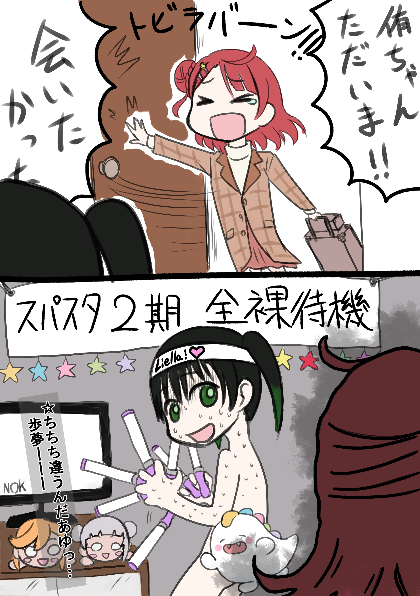

<!DOCTYPE html>
<html lang="zh-CN">
<head>
    <meta charset="UTF-8">
    <title>相对路径_绝对路径</title>
</head>
<body>
    <!-- 相对路径 -->
    <!-- 
    
    
     -->

    <!-- 绝对路径，分为两类：本地绝对路径、网络绝对路径  -->
     <!-- 本地绝对路径 -->
    <!--  -->

    <!-- 网络绝对路径 -->
     
     
     
     
     
</body>
</html>